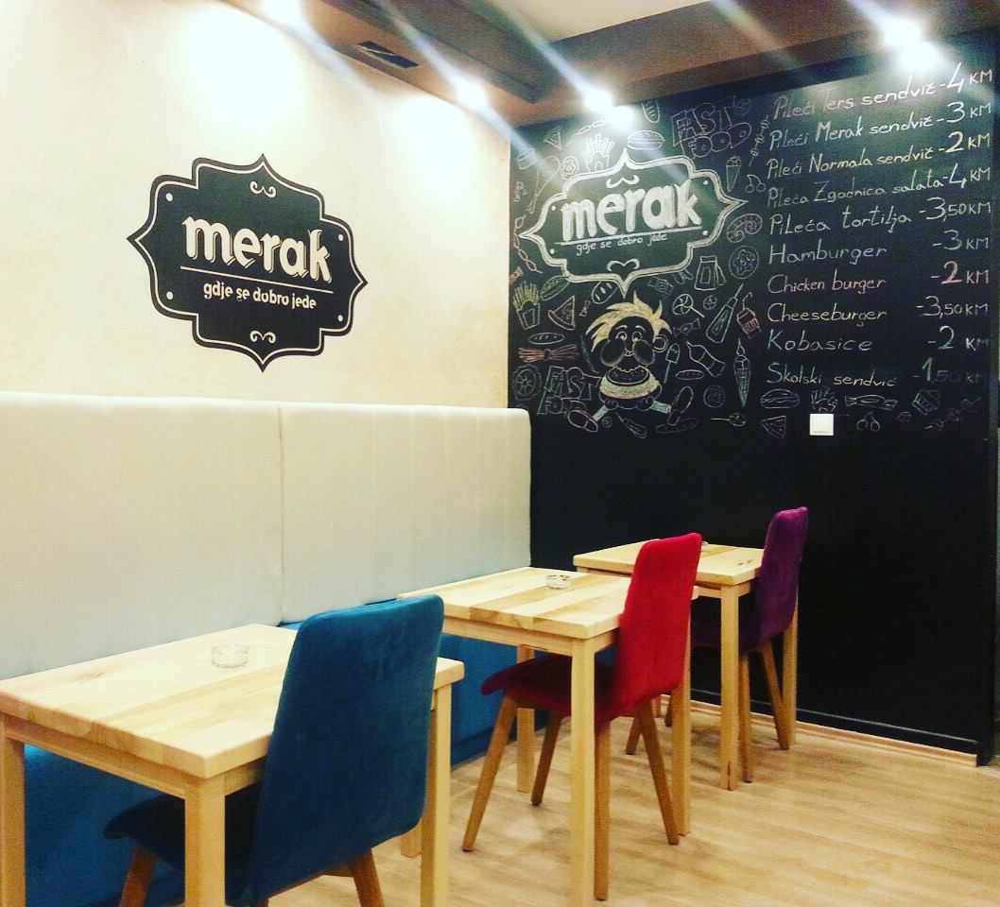
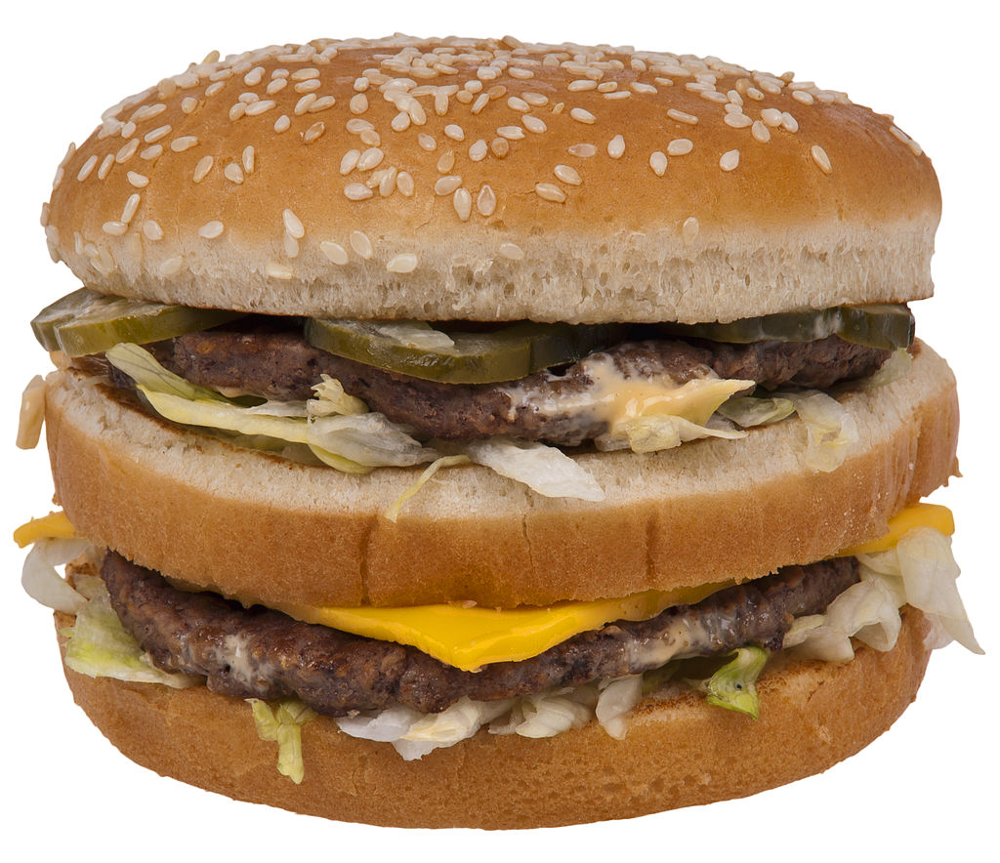

Hamburger je vrsta sendviča u okruglom pecivu, a ista riječ može se upotrijebiti i za kosani odrezak od
goveđeg mesa koji se najčešće stavlja u pecivo prilikom izrade takvog sendviča.
Mesnom odresku, koji je osnovni sastojak hamburgera, obično se pridodaje povrće poput zelene salate, luka i
kiselih krastavaca, te razni umaci poput kečapa, gorušice ili majoneze, a popularni su i hamburgeri u kojima se ranije spomenutim sastojcima pridodaje
i nekoliko krišaka sira. Hamburger sa sirom još se naziva i cheeseburger, budući da na engleskom jeziku "cheese" znači sir.
Danas mnogi restorani brze hrane upravo na hamburgerima temelje većinu svoje prodaje, a često ih poslužuju u menijima
s pomfritom ili nekim sličnim prilozima.

Postoje mnoge suprostavljene teorije o podrijetlu imena.
Jedna od teorija nastanka imena je da su hamburgeri dobili ime po njemačkom gradu Hamburgu, gdje je bilo uobičajeno staviti pečenu svinjetinu u klipić,
a još jedna teorija govori da su se u Hamburgu komadići mesa slični odrescima u današnjim hamburgerima posluživali zajedno s okruglim pecivima.
Riječ "Hamburger" u njemačkom se jeziku inače još može odnositi i na stanovnika Hamburga ili nešto što pripada Hamburgu.

Big Mac (hrv.: "Veliki Mac") je hamburger koji proizvodi kompanija McDonald's te prodaje u svojim restoranima brze hrane. Sastoji se od dva komada govedine (od po 45,4 g),
američkog sira, umaka za salatu tisuća otoka, zelene salate, krastavca i tri komada krušne lepinje. Prvi put je uveden 1967. godine u Pittsburghu i sa vremenom je postao najpopularniji od svih McDonald'sovih proizvoda
Big Mac se zbog svoje popularnosti i raširenosti po svijetu često koristi kao svojevrsni simbol kapitalizma. Časopis Economist ga je koristio kao glavnu referencu za troškove života u pojedinim
zemljama - tzv. Big Mac Index.